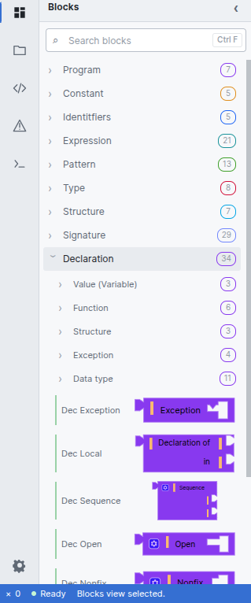
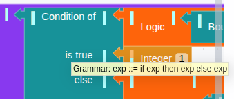

134 blocks, ten categories, one grammar
Every category in the toolbox is a non-terminal, or a small family of related ones. Nothing has been merged for convenience — if the grammar keeps two productions separate, ViSML keeps two blocks separate, even when they would look interchangeable to someone who only knows the language informally.
The toolbox

| Category | Blocks | Contents |
|---|---|---|
| Program | 7 | Functor and signature program roots, opened / nested functor bindings |
| Constant | 5 | Integer, string, character, float and word literals |
| Identifiers | 5 | Plain and long/dotted identifiers, variables, long variables, record labels |
| Expression | 21 | Application, sequencing, let…in…end, type ascription,
raise, handle, andalso /
orelse, if/then/else,
while/do; sub-categories Lambda & Case,
List, Tuple, Record |
| Pattern | 13 | Wildcard, identifier and long-identifier patterns, infix and layered
(as) patterns; sub-categories Record, Tuple,
List |
| Type | 8 | Type variables, applied constructors, function types, primitive types; sub-categories List, Tuple, Record |
| Structure | 7 | struct…end, local declarations, transparent / opaque
signature ascription, functor application |
| Signature | 29 | sig…end, where type refinement, and a large
Specification sub-tree — value, type (incl. eqtype), datatype,
exception and structure specs, plus include and
sharing type |
| Declaration | 34 | Value/Variable, Function (multi-clause), Structure, Exception, Data type
sub-categories; plus local, sequencing, open and fixity
declarations |
| Operator | 5 | Arithmetic, comparison, record selector #lab, list hd /
tl |
Signature is the largest category at 29 blocks — not an accident, but a direct reflection of how much of SML's Modules language there is to say. Most block editors would flatten this into a handful of generic “module” blocks; ViSML keeps every specification form distinct, because collapsing them would lose exactly the grammatical information the project exists to preserve. See Renderers → the research grounding for why that distinction matters enough to be a design principle rather than an oversight.
Plus / minus mutators
SML's grammar has several genuinely repetitive productions — tuples of arbitrary
arity, chains of and-joined bindings, |-separated pattern alternatives,
sequences of declarations. ViSML gives each of these a small + / −
image field directly on the block: click it to grow or shrink the number of repeated slots.
Underneath, this is backed by an itemCount stored in the block's extra state, so the
exact shape you built — a 3-tuple, a 4-clause function — survives a save and reload
intact. A repetition's continuation block (the “one more item” piece that chains onto
the first) is rendered in a lighter, _sub-tinted shade of its parent's category colour,
so a long chain still reads as one construct rather than as a stack of unrelated blocks.
Tooltips and terminal labels
Two small affordances do most of the work of teaching the grammar as you build, and both come from the same underlying idea: making a block's grammatical role visible rather than implicit.
Hover tooltips. Rest the pointer over almost any block and it shows the SML
grammar production it realises — not a description in prose, the actual production. Hover an
if-expression and you see exactly this:

if-expression block:
exp ::= if exp then exp else exp.Terminal labels. Small coloured captions sit directly on certain blocks — “Condition of”, “is true”, “else”, “Application of … over”, “Bound” — marking what grammatical role a socket or sub-block is playing. These are not decoration: they are the visual realisation of productions the underlying T2BB transformation classifies as alias or mixed, where the same nonterminal can be reached by more than one path through the grammar and the label is what tells you which path you took.
Together with the plus/minus mutators above, tooltips and terminal labels are the three visual treatments T2BB assigns to its four structural categories — terminal, alias, mixed, repetitive — and they are why a ViSML block always tells you more than just its shape and colour.
Renderers, briefly
Everything above is about which blocks exist and what they say. How they are actually drawn — connector shapes, layout, whether a program looks like a jigsaw or like indented text — is a separate question, and ViSML answers it twice: two live-switchable renderers, Macaca Nigra and Goropa. That is a large enough subject to earn its own chapter: see Renderers.